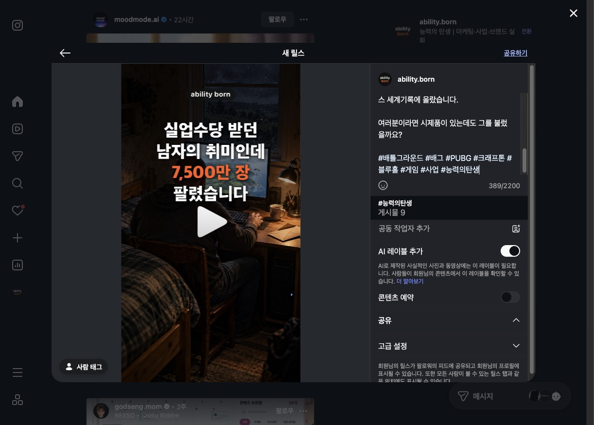
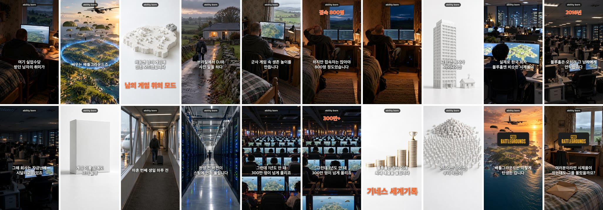

도구는 바뀌고,
쌓은 맥락과 사람은 남는다
1회차에서 나눈 6가지를 정리했습니다. 같은 날 공유한 「능력의 탄생」 제작 과정과 겹치는 내용은 각 항목 아래 참고자료 토글에 넣었습니다.
먼저 결론
오늘 이야기는 세 줄로 줄어듭니다.
도구 하나, 세션 여러 개
브라우저는 이고로 통일하고, 클로드 코드는 작업마다 세션을 따로 띄워 동시에 돌립니다.
내 맥락과 암묵지
모델은 몇 달이면 좋아집니다. 그 전에 할 일은 내 데이터와 노하우를 에이전트가 읽을 수 있게 쌓아 두는 것입니다.
결국 사람과 함께
AI가 있어도 혼자 다 할 수는 없습니다. 함께하고 싶은 사람이 되는 것도 실력입니다.
1. 브라우저는 이고 하나로
브라우저 작업은 이고(ego lite)를 기본으로 쓰고, 어사이드나 클로드 크롬은 웬만하면 쓰지 않습니다.
왜 하나로 묶나
- 로그인이 한곳에: 에이전트가 내가 로그인해 둔 사이트를 그대로 씁니다.
- 작업마다 공간을 나눔: 작업 하나에 작업 공간 하나, 끝나면 닫습니다.
- 사람과 같이 봄: 에이전트가 하는 걸 같은 창에서 보고, 막히면 내가 이어받습니다.

참고: 제작 과정에서 이고가 한 일
- 그림은 ChatGPT, 영상은 Grok을 이고의 작업 공간 여러 개에서 나눠 돌렸습니다(그림 2개, 영상 3개).
- 유튜브 스튜디오 업로드, 인스타 릴스 업로드, 두 곳 댓글까지 이고가 처리했습니다.
- 쓴 작업 공간은 편이 끝날 때마다 닫습니다.
2. 내 계정 제작 과정은 정리해 둔다
운영하는 계정의 제작 과정을 문서로 남겨 두면, 나도 다음 편에 다시 쓰고 남에게도 그대로 보여 줄 수 있습니다.

참고: 능력의 탄생 제작 과정 요약
컷 나누기부터 업로드까지 47분. 전체 내용은 제작 과정 리포트에 있습니다.
3. 세션 하나 띄우고 기다리지 않는다
클로드 코드에 일 하나 시켜 놓고 끝나길 기다리지 말고, 작업마다 세션을 따로 띄워 여러 개를 동시에 운영하는 습관을 들입니다.
습관으로 만들려면
- 작업을 잘게: "영상 하나 만들기"보다 "대본", "그림", "업로드"처럼 끝이 분명한 단위로.
- 세션 이름을 작업 이름으로: 돌아왔을 때 무엇을 하던 세션인지 바로 보이게.
- 결과는 파일로: 세션이 바뀌어도 이어받을 수 있게 산출물을 폴더에 남깁니다.
참고: 제작 과정에서 동시에 돌린 단계
배틀그라운드 편 단계별 걸린 시간 (분)
그림과 영상을 동시에 돌려서 단계 합(54분)보다 실제 시간(47분)이 짧습니다.
표로 보기
4. 내 맥락을 다 아는 에이전트를 들고 있는다
옵시디언이든 톨라리아든, 내 맥락을 모두 읽은 에이전트가 있으면 그 누구에게 묻는 것보다 나를 잘 아는 답이 나옵니다.
예시
재민이형의 인스타 스토리와 블로그 글을 모두 학습한 에이전트. 재민이형에 대해서는 어떤 사람보다 잘 답할 것입니다.
무엇을 넣나
- 내가 쓴 것: 글, 메모, 기획서, 대본
- 내가 정한 것: 규칙, 금지어, 말투, 고른 이유
- 내가 겪은 것: 실패 기록, 회고, 성적 데이터
참고: 제작 과정에서 맥락이 한 일
- 채널 규칙(제목에 브랜드명 빼기, 쓰지 않는 대사 두 개, 업로드 때 AI 표시, 고정댓글 문구)을 에이전트가 기억에서 꺼내 매 편 자동으로 지켰습니다.
- "이름이 비슷한 다른 채널에 잘못 올린 적이 있다"는 기록 덕분에, 업로드 전후로 채널을 두 번 확인합니다.
- 주제 추천도 지난 편 조회수 기록을 읽고 했습니다.
5. 다음 모델이 나오기 전에 할 일
기술은 빠르게 바뀌고, 지금 고민하는 문제도 몇 달 뒤면 문제가 아니게 됩니다. 그 사이에 할 일은 데이터와 암묵지를 쌓고 내 본질을 키우는 것입니다.
참고: 제작 과정에서 쌓고 있는 것
- 성적 데이터: 올린 편의 조회수를 모아 대본 체크리스트로 바꿨습니다. 처음 6편을 비교해 대본을 860~905자에서 700~750자로 줄이고, 제목 틀을 바꿨습니다.
- 실패 기록: 매 편 작업 기록을 남기고, 새로 알게 된 실수를 스킬 문서에 한 줄씩 더합니다. 오늘은 "Grok이 시간 초과를 반복하는 컷은 기다리지 말고 그림 모션으로"가 추가됐습니다.
- 스킬로 굳히기: 절차를 스킬로 만들어 두 맥에 동기화하니, 다음 편은 같은 품질로 바로 시작합니다.
체크리스트를 만든 데이터: 편별 유튜브 조회수
유튜브 표시값 기준. 배틀그라운드 편은 올린 지 약 20분 뒤 숫자입니다.
표로 보기
6. AI가 있어도 혼자서는 못 한다
결국 좋은 사람들과 함께해야 하고, 함께하고 싶은 사람이 되려고 노력해야 합니다.
AI가 맡는 것
- 반복되는 제작, 정리, 업로드
- 자료 모으기와 첫 초안
- 정해 둔 규칙대로 검사하기
사람이 하는 것
- 방향과 판단: 무엇을 만들지, 무엇이 좋은지
- 신뢰와 관계: 같이 일할 사람, 도와줄 사람, 보아 줄 사람
- 나누기: 오늘처럼 배운 걸 공유해서 함께하고 싶은 사람이 되기